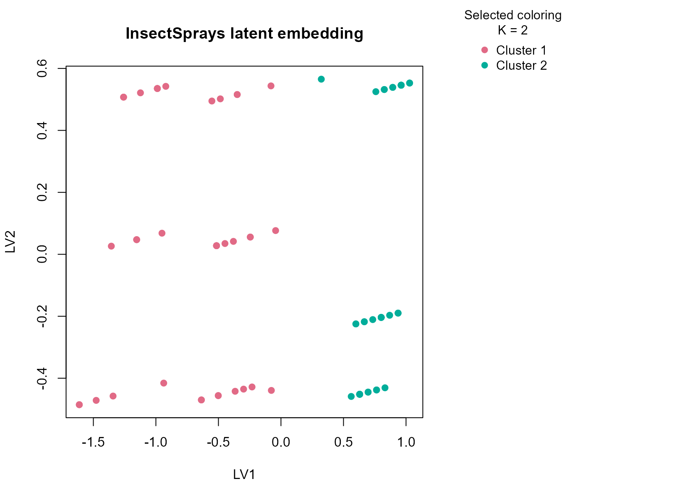

Background
InsectSprays records insect counts under different spray
conditions. It is a small experimental dataset with a simple mixed
structure: a count-like numeric response plus a treatment factor.
Despite its size, it is a useful real-data example because the
experimental factor is known and the numeric outcome has clear practical
meaning.
Objective
The objective is to determine whether uccdf recovers
stable efficacy regimes from the observed insect counts and spray
labels, and to check whether the result reflects a broad low-count
versus high-count separation rather than an over-fragmented grouping of
individual sprays.
Data preparation
sprays_df <- InsectSprays
sprays_df$sample_id <- sprintf("IS%03d", seq_len(nrow(sprays_df)))
sprays_df$count_band <- ordered(
cut(sprays_df$count, breaks = c(-Inf, 6, 15, Inf), labels = c("low", "mid", "high")),
levels = c("low", "mid", "high")
)
analysis_sprays <- sprays_df[, c("sample_id", "count", "spray", "count_band")]
head(analysis_sprays)
#> sample_id count spray count_band
#> 1 IS001 10 A mid
#> 2 IS002 7 A mid
#> 3 IS003 20 A high
#> 4 IS004 14 A mid
#> 5 IS005 14 A mid
#> 6 IS006 12 A midAnalysis
fit_sprays <- fit_uccdf(
analysis_sprays,
id_column = "sample_id",
candidate_k = 1:5,
n_resamples = 20,
n_null = 39,
row_fraction = 0.85,
col_fraction = 0.85,
seed = 333
)
fit_sprays$selection
#> $alpha
#> [1] 0.05
#>
#> $global_p_value
#> [1] 0.025
#>
#> $null_family
#> [1] "independence_marginal_null"
#>
#> $detected_structure
#> [1] TRUE
#>
#> $best_exploratory_k
#> [1] 2
#>
#> $best_supported_k
#> [1] 2
select_k(fit_sprays)
#> k stability null_mean null_sd stability_excess z_score p_value supported
#> 1 2 0.9499258 0.3861876 0.06245955 0.5637381 9.025651 0.025 TRUE
#> 2 3 0.6751667 0.3059309 0.07799298 0.3692358 4.734218 0.025 TRUE
#> 3 4 0.6607274 0.3968874 0.07099223 0.2638400 3.716463 0.025 TRUE
#> 4 5 0.7117390 0.5399919 0.05336445 0.1717470 3.218378 0.025 TRUE
#> objective
#> 1 8.887021
#> 2 4.514495
#> 3 3.439204
#> 4 2.896491Results
sprays_assign <- merge(augment(fit_sprays), sprays_df, by.x = "row_id", by.y = "sample_id", all.x = TRUE)
head(sprays_assign)
#> row_id cluster confidence ambiguity exploratory_cluster
#> 1 IS001 1 0.9781701 0.021829861 1
#> 2 IS002 1 0.9652655 0.034734506 1
#> 3 IS003 1 0.9928565 0.007143456 1
#> 4 IS004 1 0.9927567 0.007243336 1
#> 5 IS005 1 0.9925926 0.007407408 1
#> 6 IS006 1 0.9955785 0.004421466 1
#> exploratory_confidence exploratory_ambiguity assignment_mode selected_k
#> 1 0.9781701 0.021829861 selected 2
#> 2 0.9652655 0.034734506 selected 2
#> 3 0.9928565 0.007143456 selected 2
#> 4 0.9927567 0.007243336 selected 2
#> 5 0.9925926 0.007407408 selected 2
#> 6 0.9955785 0.004421466 selected 2
#> exploratory_k count spray count_band
#> 1 2 10 A mid
#> 2 2 7 A mid
#> 3 2 20 A high
#> 4 2 14 A mid
#> 5 2 14 A mid
#> 6 2 12 A mid
aggregate(
cbind(count, confidence) ~ cluster,
sprays_assign,
function(x) round(mean(x, na.rm = TRUE), 2)
)
#> cluster count confidence
#> 1 1 15.41 0.99
#> 2 2 3.26 0.99
table(sprays_assign$cluster, sprays_assign$spray)
#>
#> A B C D E F
#> 1 12 12 0 1 0 12
#> 2 0 0 12 11 12 0
table(sprays_assign$cluster, sprays_assign$count_band)
#>
#> low mid high
#> 1 0 21 16
#> 2 34 1 0
round(prop.table(table(sprays_assign$cluster, sprays_assign$spray), margin = 1), 3)
#>
#> A B C D E F
#> 1 0.324 0.324 0.000 0.027 0.000 0.324
#> 2 0.000 0.000 0.343 0.314 0.343 0.000
plot_embedding(fit_sprays, color_by = "selected", main = "InsectSprays latent embedding")
plot_consensus_heatmap(fit_sprays, main = "InsectSprays consensus heatmap")Discussion
The selected two-cluster solution is easy to read against the experimental context. One cluster is typically enriched for rows with lower counts and the better-performing sprays, while the other collects higher-count outcomes and the weaker treatment settings. The count-band table is useful here because it makes clear that the split is anchored in observed efficacy rather than in arbitrary factor coding.
This dataset is also a good calibration check for the method. Because the table is small, a single clustering run can be unstable. The consensus workflow still finds a coherent low-count versus high-count separation, which is exactly the kind of conservative summary we want from a stability-oriented tool.
Interpretation
For InsectSprays, the resulting partition is best
interpreted as a stable contrast between more effective and less
effective spray-response regimes. The result is simple, but it is not
trivial: it demonstrates that uccdf can recover an
interpretable consensus split even when the dataset is small and the
signal is partly encoded by a treatment factor.